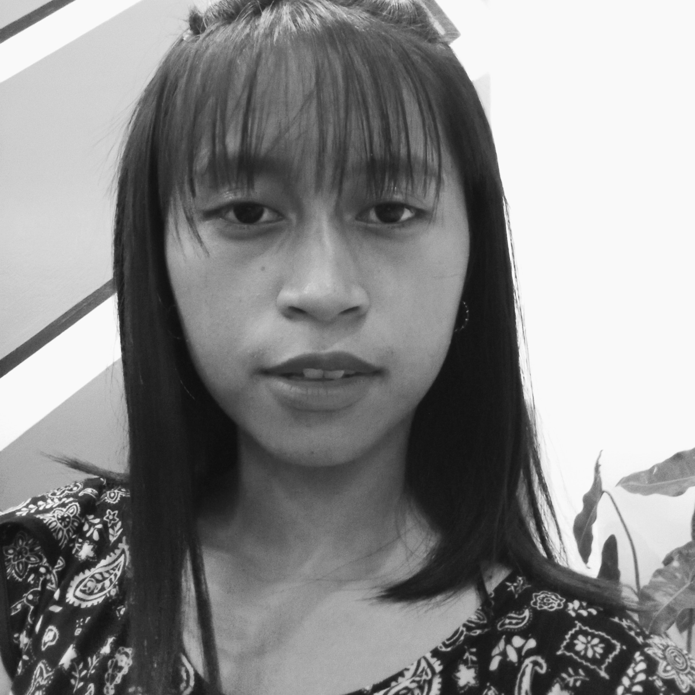

PROFILE
Last Name: Gacusan
First Name: Daisy Lyn
Middle Name: Caratay
Age: 19
Birthdate: December 6, 2003
Address: Patpata 2nd, Candon City, Ilocos Sur
Contact No.: 09123767653
Hobbies: Reading, writing, binge-watching, listening to music, travelling
Father's Name: Apolinario Padilla Gacusan

Mother's Name: Myrna Caratay Gacusan
Siblings: Mary Apple Gacusan Basa
Ervin Caratay Gacusan
Mark Caratay Gacusan
Charlene Caratay Gacusan
Shaira Mae Caratay
Pets' Name: Hippo (cat)
Alex (cat)
Surva (cat)
Miming (cat)
Lucky (dog)
Education: